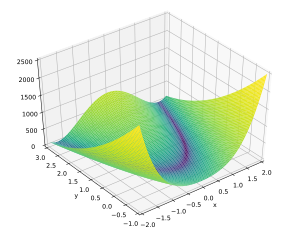
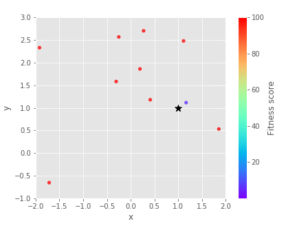
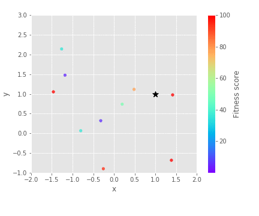
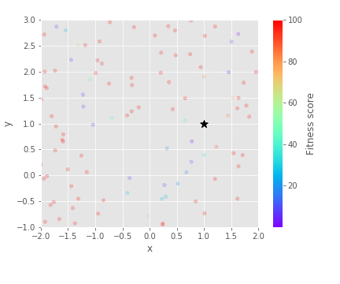
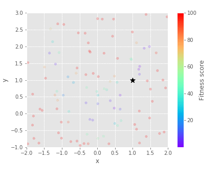
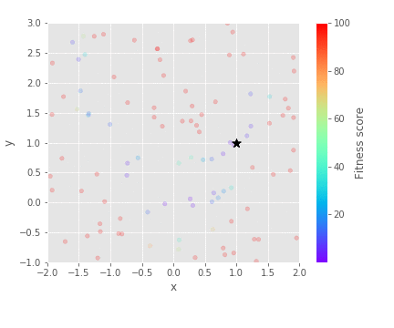
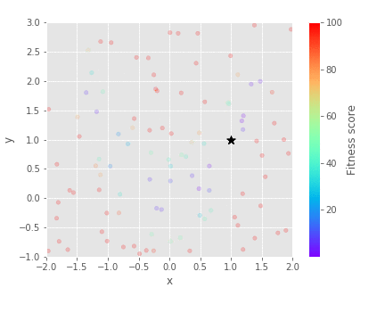

Population size¶
The aim of this tutorial is to help you select a population size for your genetic algorithm. We will use Rosenbrock's banana function.
\(f(x,y) = (a-x)^2 + b(y - x^2)^2\)
For the constants \(a = 1\) and \(b = 100\), the minimum is at \(f(1,1) = 0\).
import gaga as ga
genes = {'x':(-2, 2),
'y':(-1, 3)}
def evaluate(individual):
a = 1
b = 100
x = individual.genes['x']
y = individual.genes['y']
individual.fitness_score = (pow(a - x, 2) + b * pow(y - pow(x, 2), 2))
A small population¶
When the population size is small, the genetic algorithm is extremely sensitive to initial conditions.
Low exploration¶
The problem with a small population is that the initial population might not start anywhere near the global optimum. If the mutation is low then the population may take a long time to discover the optimum or may never discover it at all.
sim = ga.ga(genes, evaluate, population_size = 10)
sim.run_simulation(seed = seed)
|  | ||
|
|
|
Good exploration¶
For a small population size, you generally want large mutate and sigma to encourage exploration.
sim = ga.ga(genes, evaluate, mutate = 0.6, sigma = 0.3, population_size = 10)
sim.run_simulation(seed = seed)
|  | ||
|
|
|
A large population¶
A large population can be computationally expensive. It is usually better to work with a smaller population.
Low selection¶
A large population will sample the initial search space well making it less dependant to initial conditions and some of the initial population should begin near the optimum. However, the population will be diluted with bad genes and may result in the extinction of fitter individuals forcing the population to converge to a suboptimal solution. A large population is also very resilient and will be slow to move towards the optimum (see below seed = 2).
sim = ga.ga(genes, evaluate, population_size = 100)
sim.run_simulation(seed = seed)

|
 |  |
|
|
|
High selection¶
It is usually good to increase the selection pressure for a large population because usually the bad/mediocre genes dominate the population.
sim = ga.ga(genes, evaluate, population_size = 100, winrate = 0.9, clone = 5)
sim.run_simulation(seed = seed)
|  |  | |
|
|
|